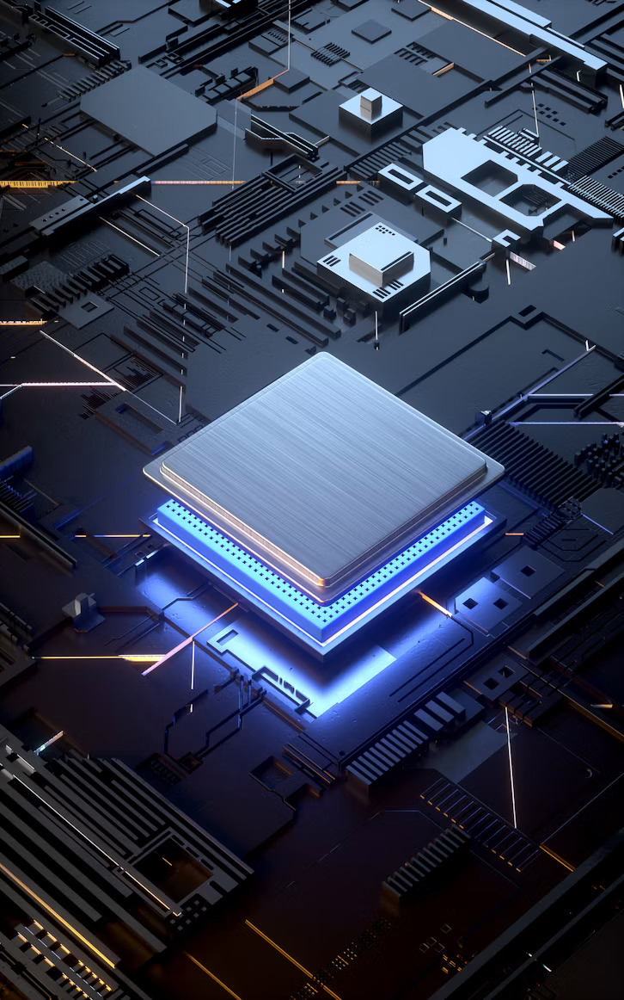
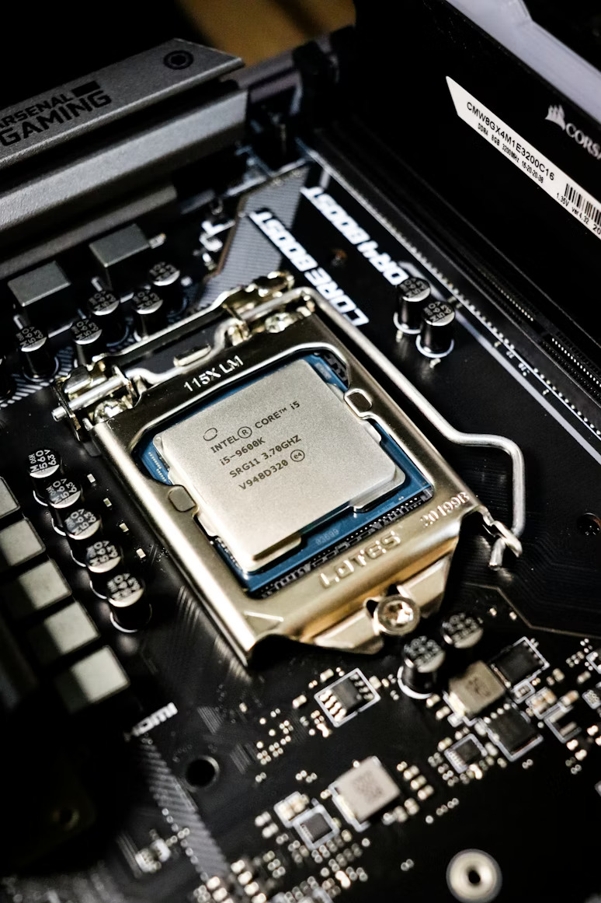

Sustainability Through the Ages
Explore Intel's journey through time and discover how innovation, renewable energy, and responsible manufacturing are shaping a more sustainable future for technology and our planet.
Explore Intel's journey through time and discover how innovation, renewable energy, and responsible manufacturing are shaping a more sustainable future for technology and our planet.

Robert Noyce and Gordon Moore rename NM Electronics to Intel Corporation, laying the foundation for decades of technological and sustainable innovation.
Early Intel teams built a legacy that combined computing breakthroughs with a long-term vision for environmental stewardship.

Intel debuts the 4004, the world's first commercial microprocessor, ushering in the era of efficient computing and smaller power consumption.
The 4004 laid the groundwork for smarter devices that use less energy per computation.

The 8086 processor establishes the x86 architecture, powering PCs and servers around the world with more efficient performance.
Its architecture became a standard that enabled faster progress in energy-conscious computing.

Intel introduces the 386 processor with 32-bit architecture, unlocking advanced computing capability and greater system efficiency.
This generation made it easier to build more powerful computing systems with smarter energy use.

This year marks Intel's highest annual greenhouse gas emissions for operations, driving major investments in clean energy and efficiency.
Intel responded with chemical abatement upgrades and a renewed focus on renewable power.

Intel launches RISE (Responsible, Inclusive, Sustainable, Enabling), setting 2030 goals for climate action, water stewardship, and waste reduction.
The strategy formalized Intel's purpose-led approach to driving industry-wide sustainability.

Intel commits to net-zero greenhouse gas emissions (Scope 1 and 2) across global operations by 2040, building on prior environmental progress.
This bold goal ties innovation directly to the long-term health of communities and climate.

Intel achieves 99% renewable electricity usage worldwide, drastically reducing carbon emissions across global operations.
The achievement underscores Intel's progress toward a cleaner, smarter supply chain.

Intel hosts its first Sustainability Summit, uniting suppliers, regulators, and leaders to plan next-generation sustainable semiconductor manufacturing.
The summit connects partners to accelerate progress on energy, waste, and supply-chain impact.
Scroll to view the timeline on larger screens | Hover over cards to learn more.